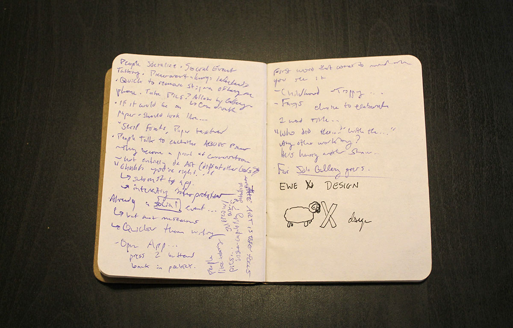
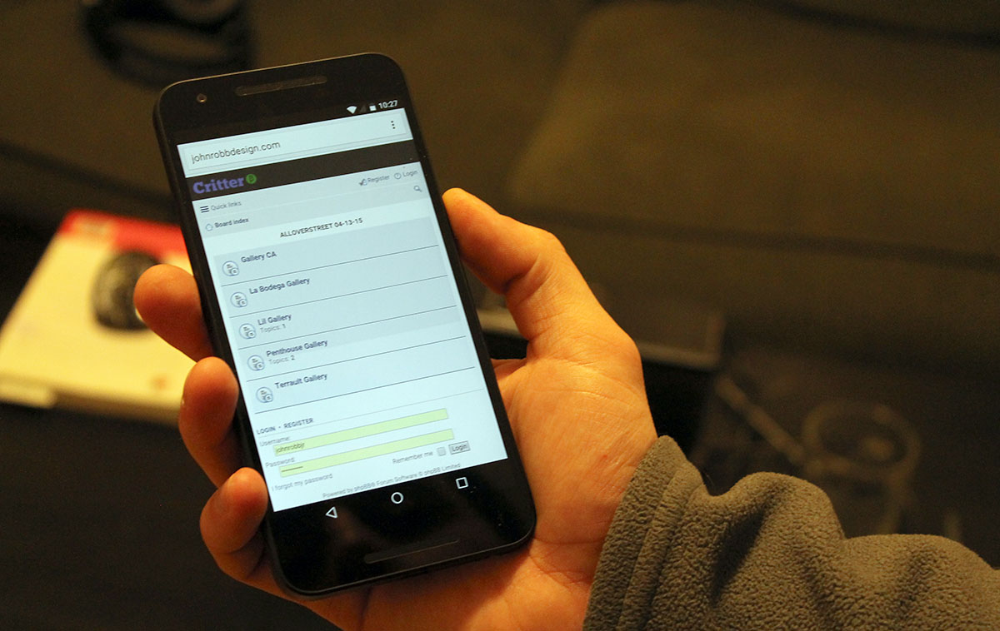
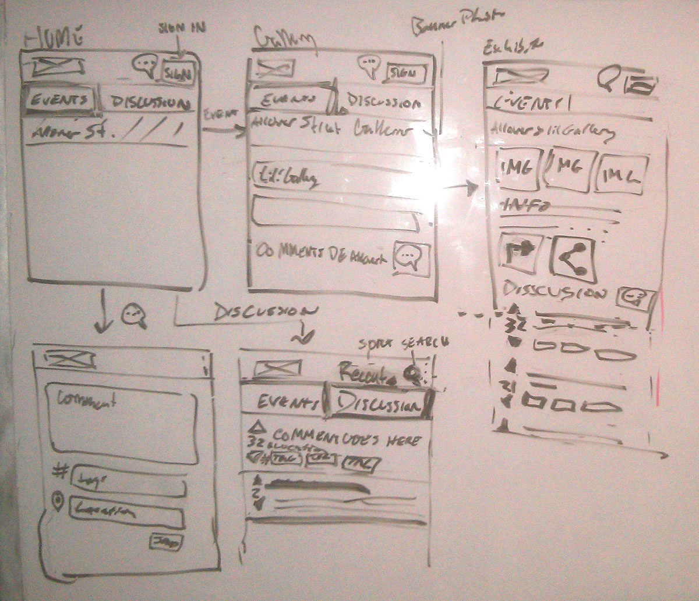
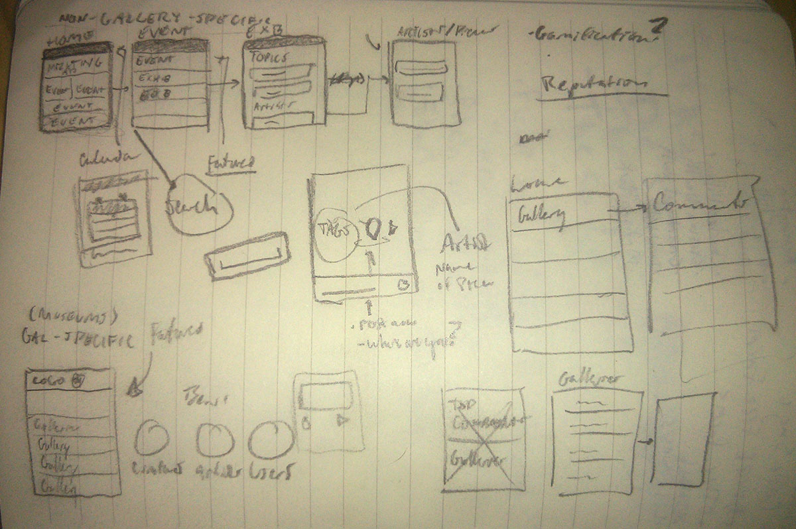
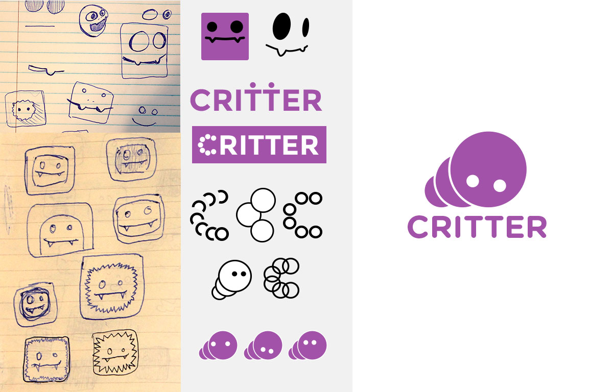
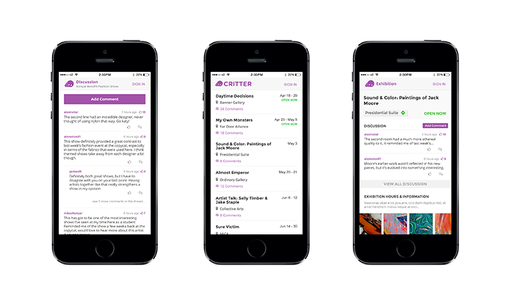
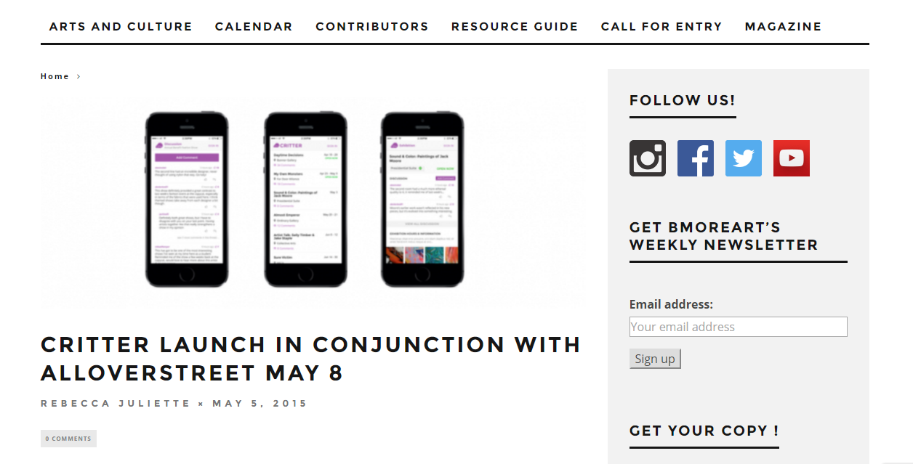
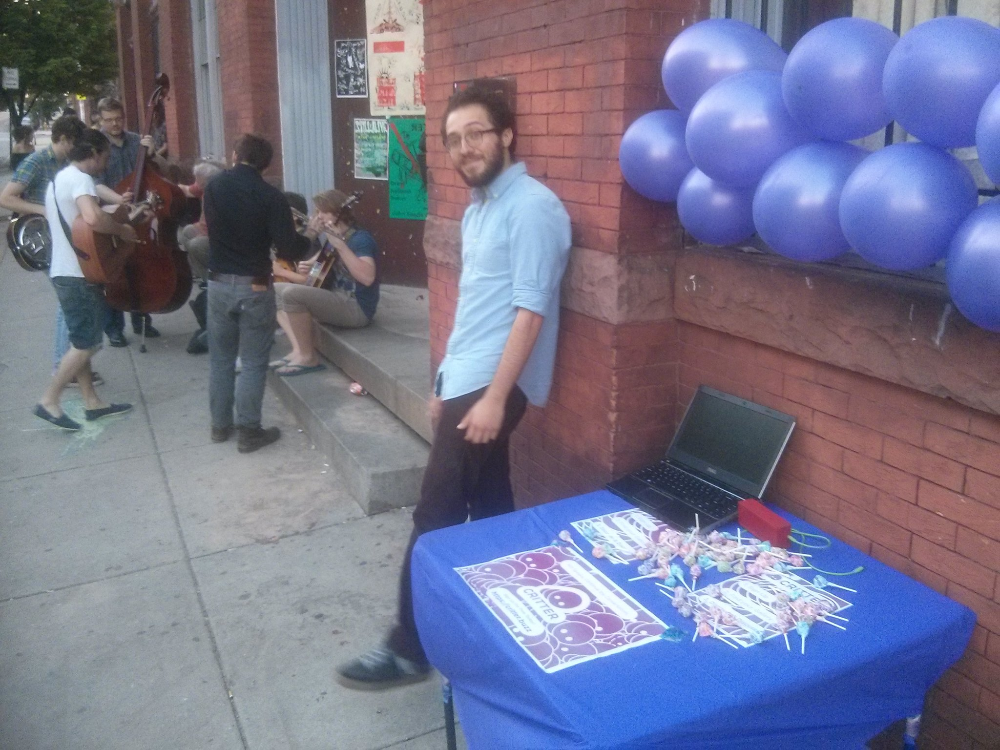

May, 2015
My friend Miki (a sculptor and all-around swell guy) had an idea. He knew that there were valuable conversations to be had around art that might pop up in class or in casual conversation, but they were rarer than they should be.
The idea was interesting, and eventually we built it out as a mobile web app structured as an events calendar with a focus on user comments.
Ultimately the app flopped, but with our fail-fast mentality going into it, we were able to take it as a learning experience without using unnecessary time and resources.
Budget: Basically none. We all pitched in a small bit of personal money towards an SSL certificate, web hosting, and some promotional materials.
Experience: I had never lead a project like this before, but I would draw on the experiences of others for help and knowledge.
Time: We gave ourselves about one month to go from concept to launch at the popular “Alloverstreet” gallery event.
We went into the process with the desire of having an MVP out in a month, so we used quick and efficient techniques to have our product ready in time for quick validation.
We started with an extremely low fidelity prototype to figure out the basic functionalities of the application. I went to a gallery event with a small notebook, and wrote something down every time I felt compelled to use the app.
Prototype exercise (feat. unrelated sketch)
From this we gained valuable insights at when a person might use this during their gallery experience and how a person might interact with others while using it.
First we tried to use an open-source forum software (phpBB) to develop the product, but it lacked the customization options necessary to create an easy-to-use web application. 
Critter running on the clunky phpBB platform
We called on our friend who is a seasoned developer who agreed to jump on board the project. We then decided we’d build the mobile web app from scratch. Mark (the developer) would handle the backend and databases (using Perl and SQL) while I would handle the front-end (HTML, CSS, and Bootstrap).
Miki and I took to the whiteboard, and eventually came up with the app’s user flows and general layout.
Early whiteboard drawings
Initial sketches
For the logo we called up another friend with a strong visual design background, and iterated until we got to our fun little "critter" (derived from the word "critique"):
Development of the Critter logo
I used the sketches to create hi-fi mockups which I would reference during the development phase.
HiFi Comps
As Mark and I were in the height of the development phase, Miki reached out to the founder of a popular Baltimore art news source, Bmore Art. We met with her over coffee, discussing our idea, possibilities of expansion, and what she could do to help us. We sent her a press release and it was posted to Bmore Art, which many people mentioned to have seen at the launch.
Press Release published on Bmore Art
We promoted the event on Facebook, and teamed up with Alloverstreet to have it sent out in their pre-event email. I also designed flyers to be posted around the venue and to be posted on social media leading up to the launch.
We prepared our table outside of the Alloverstreet event a purple tablecloth and matching balloons, as well as lollipops (as I said, low budget). We asked some friends to comment and start the conversation as they were in the galleries, which unfortunately did not come to fruition.
Miki manning the booth
As people filtered in, we asked them if they wanted a lollipop, and gave a small pitch about what Critter was and how they could download it. We talked to nearly 100 people, but a problem began to quickly emerge: many of the people we spoke to didn’t own a smartphone. This was not something we had considered while developing a mobile-first web app. A lot of people seemed interested in the idea, and we had 13 sign-ups by the end of the night.
Four hours later, we broke down for the night, and not a single comment had been posted. There could have been many reasons as to why this occurred, but after much thought we decided the overwhelming disinterest was enough to discontinue the project.
View the live Critter mobile website here
Conducting more initial user research would have led to earlier invalidation of our original idea, which could have possibly lead to new similar concepts.
Our launch was not extremely well planned. Providing further motivation in some form for users to sign up and comment may have helped to drive usage.
We went into the project with a fail-fast mentality, and we were able to release an MVP within a month. Even if it failed, we were successful in our pursuit of learning.
I was able to hone my HTML and CSS skills by applying them to a tangible project.
Leading the full ideation-design-iteration-development process was incredibly interesting and I gained confidence to be able to go through a similar process in the future.


{kind=link}
{kind=link}
{kind=link}
{kind=link}
{kind=link}
{kind=link}
{kind=link}
{kind=link}